Clique sur chaque tiroir pour explorer
Huit étapes pour comprendre, mesurer et agir. Ouvre celle qui t'intéresse — un seul tiroir s'ouvre à la fois.
Que tu te sentes déjà bien ou non, ça te concerne.
Et si les signaux que ton corps t'envoie
n'étaient pas une fatalité,
mais un message mesurable ?
De plus en plus de personnes souffrent,
de plus en plus tôt
Fatigue persistante, sommeil perturbé, douleurs, stress, baisse d'énergie… Beaucoup d'entre nous font attention à leur santé sans toujours obtenir les résultats espérés. Trois grandes familles de facteurs peuvent influencer ton équilibre cellulaire.
L'inflammation, par exemple, est un mécanisme naturel indispensable. Mais le stress chronique, la sédentarité ou certaines habitudes peuvent contribuer à la maintenir de façon prolongée. À l'inverse, ton organisme possède de nombreux systèmes de protection et de régulation, eux aussi influencés par ton mode de vie.
En résumé : ton patrimoine génétique constitue une base, mais tes habitudes quotidiennes participent à créer un environnement plus ou moins favorable au bon fonctionnement de tes cellules.
Nous travaillons avec un laboratoire indépendant et utilisons un protocole scientifique développé et étudié à l'international depuis 2012. Notre objectif n'est pas de remplacer les professionnels de santé, mais d'apporter des informations accessibles, des outils de mesure et un accompagnement humain.
Libre à chacun d'explorer ces informations, de poser ses questions… ou simplement de refermer cette page en ayant appris quelque chose d'utile.
Mieux vaut prévenir que guérir.
Il est tellement plus facile de réagir quand les eaux sont calmes, plutôt que de devoir nager contre un courant trop puissant.
Nous ne pourrons pas changer notre environnement —
mais nous pouvons adopter des routines qui créent
un cercle vertueux d'amélioration et de mieux-être.
Tu fais peut-être déjà attention à ton alimentation, tu pratiques une activité physique ou tu prends des compléments. C'est une excellente démarche. Pourtant, j'ai rencontré de nombreuses personnes très investies dans leur santé qui découvraient malgré tout certains déséquilibres invisibles.
Prendre soin de soi, c'est bien.
Comprendre et vérifier, c'est encore mieux.
L'inflammation chronique :
silencieuse, persistante… mais pas une fatalité
Parmi les nombreux mécanismes qui influencent notre santé, l'équilibre entre les oméga-3 et les oméga-6 joue un rôle important dans la régulation de l'inflammation, le fonctionnement du cerveau, du cœur et de l'ensemble de l'organisme.
Cette inflammation dite « chronique » ou « silencieuse » n'entraîne pas forcément de symptômes immédiats, mais elle est aujourd'hui étudiée pour son implication dans de nombreuses situations liées au vieillissement et à la santé métabolique et cardiovasculaire. La graisse viscérale participe elle aussi à la production de substances inflammatoires.
- Une alimentation riche en produits ultra-transformés, sucres raffinés et graisses de mauvaise qualité.
- Un déséquilibre entre les oméga-6 et les oméga-3.
- Le stress chronique et ses conséquences sur l'organisme.
- Le manque de sommeil et la sédentarité.
- Certains facteurs environnementaux.
- Un microbiote fragilisé.
- Une alimentation variée, riche en fruits, légumes et fibres.
- Des apports suffisants en oméga-3.
- Les polyphénols naturellement présents dans certains aliments.
- Une bonne hydratation.
- Une activité physique régulière.
- Un sommeil réparateur.
- Un microbiote diversifié.
Synthèse inspirée de : Dr. Medissa Niki Dan, « Adieu l'inflammation chronique : techniques pratiques et alimentation saine pour rajeunir, perdre du poids et vivre en bonne santé » — © 2024
Oméga-6 et Oméga-3 :
deux acides gras essentiels,
un équilibre vital
Oméga-6
Oméga-3
- Certaines huiles végétales (tournesol, maïs, soja).
- Les produits ultra-transformés.
- Une partie des viandes issues d'élevages intensifs.
- Certains plats industriels et fast-foods.
- Sardines, maquereaux, harengs et autres petits poissons gras.
- Noix, graines de lin et de chanvre.
- Algues et certains végétaux.
- Produits issus d'animaux élevés au pâturage.
Nous avons bouleversé notre alimentation
en moins d'un siècle
En un siècle, notre alimentation a radicalement changé — et avec elle, l'équilibre entre oméga-6 et oméga-3.
💡 Comment lire ces chiffres ? Un ratio de 3:1 signifie 3 oméga-6 pour 1 oméga-3. Plus le premier chiffre grimpe, plus le déséquilibre — et l'inflammation — augmentent.
La science recommande un ratio inférieur à 3:1 pour offrir à tes cellules un terrain propice à une meilleure santé.
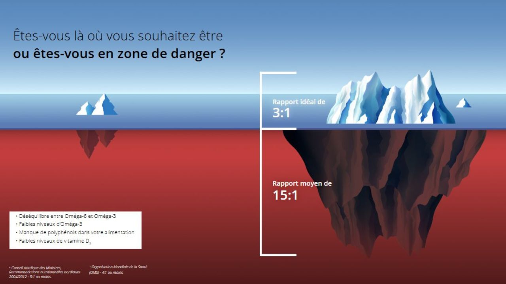
Missouri Medicine, sept.–oct. 2021 — The importance of maintaining a low omega-6 / omega-3 ratio for reducing the risk of autoimmune diseases, asthma, and allergies.
Lipids in Health and Disease, 9 août 2025 — Global variations in omega-3 fatty acid status and omega-6:3 ratios.
Ce déséquilibre durcit tes membranes cellulaires.
Ton corps absorbe moins bien ce que tu lui apportes.
Il élimine plus difficilement les toxines.
Ta cellule, c'est comme une maison
Tout à l'heure, on parlait de ta voiture. Reste dans le concret : imagine ta cellule comme une maison. Sa membrane, ce sont les volets et la porte. S'ils sont bloqués, rien n'entre ni ne sort. S'ils s'ouvrent bien, les bons nutriments entrent et les déchets sortent.
Membrane rigide
Volets et porte fermés. Rien ne circule : les nutriments restent dehors, les déchets s'accumulent dedans. Ton corps travaille comme une passoire bouchée.
Membrane souple
Volets et porte ouverts. Les bons nutriments entrent, les toxines sortent. Les échanges se font : ta cellule respire et fonctionne bien.
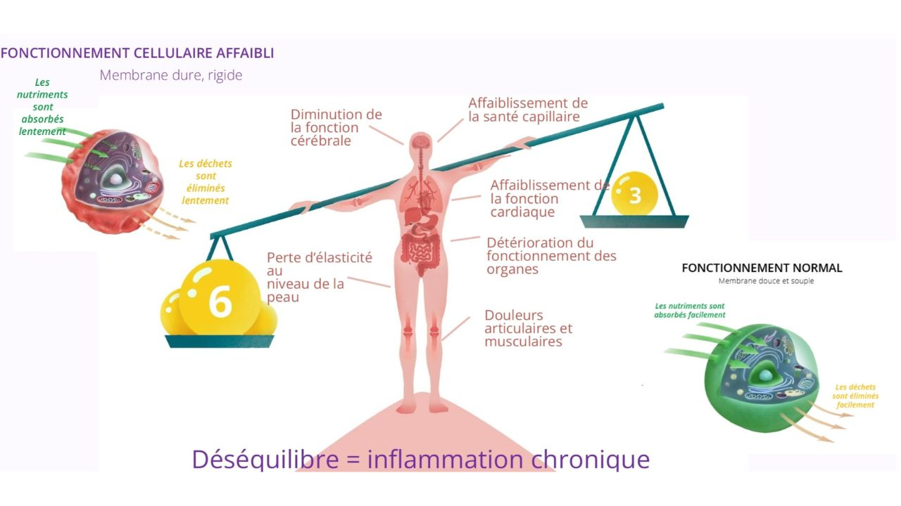
Quand la balance penche du côté des oméga-6, la membrane se rigidifie : les nutriments entrent moins bien, les déchets sortent moins bien. C'est ce déséquilibre durable que la science associe à l'inflammation chronique — et qui peut retentir, peu à peu, sur l'ensemble de l'organisme.
Et toi, où en es-tu vraiment ?
Beaucoup de personnes sont concernées par ce déséquilibre — et tu verras, au fil de l'étape suivante, que le nombre de personnes touchées est tout simplement alarmant. Impossible de le deviner à l'œil nu : mais il existe un moyen simple de savoir si tu es personnellement en zone d'équilibre… ou de déséquilibre.
Connaître ton profil réel
en 6 étapes, depuis chez toi
En 120 jours, ton corps peut retrouver son équilibre — avec une preuve chiffrée à l'arrivée.
Sur plus de 1,7 million de tests analysés dans le monde, environ 97 % des personnes présentent un déséquilibre oméga-6 / oméga-3, avec un ratio moyen autour de 15:1. En Europe, ce sont près de 95 % des personnes qui sont concernées.
Et ce n'est pas qu'une histoire d'assiette occidentale : même en Asie, où l'on consomme beaucoup de poisson, le déséquilibre est tout aussi présent — parfois davantage. La preuve que l'on peut « bien manger » et être malgré tout déséquilibré.
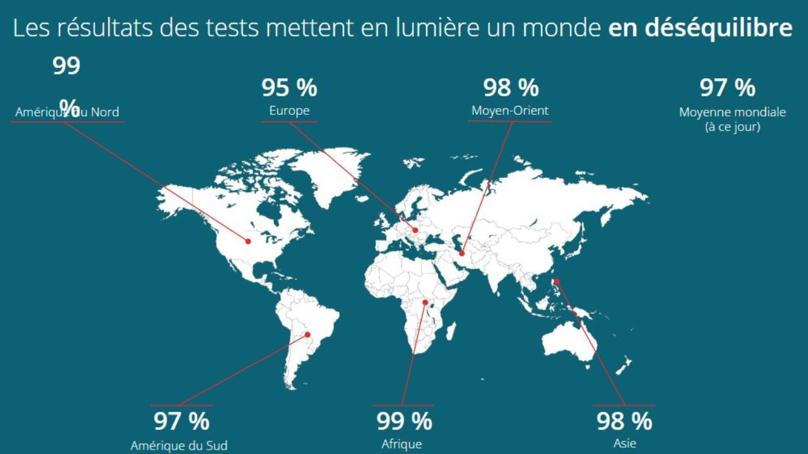
Test sanguin séché à domicile
Deux gouttes de sang séché suffisent pour obtenir tes données. Une procédure simple, rapide et indolore, à réaliser toi-même en toute sérénité.
Simple · Rapide · IndoloreEnvoi par la poste à Oslo
Tu glisses ton échantillon dans l'enveloppe pré-adressée fournie dans le kit, et tu la postes. Direction la Norvège, où se trouve le laboratoire. Rien à payer, rien à imprimer.
Enveloppe fournieAnalyse par le laboratoire VITAS (Norvège)
Ton échantillon est analysé à 100 % anonymement par un laboratoire indépendant certifié GMP, partenaire d'institutions de renommée mondiale (OMS, Harvard, Oxford, Cambridge).
Anonyme · Indépendant
Tes résultats personnels en 15–20 jours
Accède à ton espace en ligne pour découvrir tes indicateurs : ton ratio oméga-6 / oméga-3, ta fluidité membranaire, ton indice d'oméga-3 et ton indice de force mentale.
Tableau de bord personnelUn protocole adapté à ton profil
Tes résultats permettent d'établir une routine quotidienne personnalisée, adaptée à ton poids et à tes besoins précis — le détail des produits est présenté au tiroir suivant.
Sur-mesureLe second test — la preuve chiffrée
Je ne te promets pas un équilibre en 120 jours : tout dépend de ton point de départ. Ce que je peux te dire, c'est que depuis l'arrivée des tests en France en mai 2024, toutes les personnes que j'ai accompagnées et qui ont mis en place le protocole ont amélioré leur ratio. Le second test le montre noir sur blanc.
La preuve mesuréeTes indicateurs globaux (tableau de bord)
• L'équilibre oméga-6 / oméga-3 — le fameux ratio qui indique si ton terrain est équilibré ou non.
• La valeur de protection — l'indice global de défense de tes cellules.
• La fluidité de la membrane cellulaire — pour savoir si tes cellules laissent entrer les nutriments et sortir les toxines.
• L'indice d'oméga-3 — le taux d'oméga-3 protecteurs dans ton organisme.
• La force mentale — l'impact de cet équilibre sur tes fonctions cognitives et ton bien-être.
Le détail des acides gras mesurés
• Les oméga-3 (EPA, DHA, DPA, ALA).
• Les oméga-6 (acide linoléique, acide arachidonique…).
• Les oméga-9 (acide oléique).
• Les graisses saturées (acides palmitique et stéarique).
Le test n'est pas une fin en soi : c'est le point de départ. Ce qui change tout, c'est la petite habitude qu'on met en place ensuite — et le fait de ne pas rester seul(e) pour la tenir.
Je t'accompagne personnellement, et tu rejoins aussi tout un collectif de personnes déjà passées par là : qui ont douté, testé, ajusté… et retrouvé leur équilibre. On partage ce qui marche, on s'encourage, on avance ensemble.
📘 Un ebook nutritionnel offert
En plus des résultats de ton test, tu reçois un ebook complet, avec des conseils nutritionnels précieux pour ajuster tes repas au quotidien, en parallèle du protocole.
⚖️ Une personnalisation selon ton profil
Pas de formule standardisée : le protocole est personnalisé en fonction de ton poids et de la forme de produit la plus adaptée à tes habitudes (huile, gélules…).
🔄 Le temps de la régénération cellulaire
Tes cellules ont besoin de temps pour se renouveler. C'est pourquoi un recontrôle est conseillé environ tous les 4 mois. Ce rythme laisse la biologie faire son œuvre et mesure l'impact réel de tes nouvelles habitudes.
💡 Lors des tests de suivi, tu observes l'effet concret de ton hygiène de vie. Par exemple, une consommation importante de sucre peut freiner l'amélioration de ta fluidité membranaire. Le test te permet de le voir, de comprendre et d'ajuster pas à pas.
Ma propre preuve : lors de mon premier test, mon ratio était de 17:1. Après 6 mois de protocole, il est descendu à 4:1, pour atteindre 1,9:1 après un an et demi. Pour moi, les chiffres ont parlé.
→ Découvre mon histoire complète et d'autres témoignages au tiroir 6 « Ils l'ont vécu ».
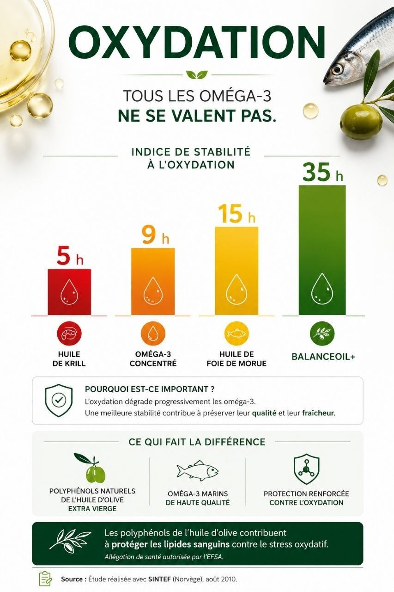
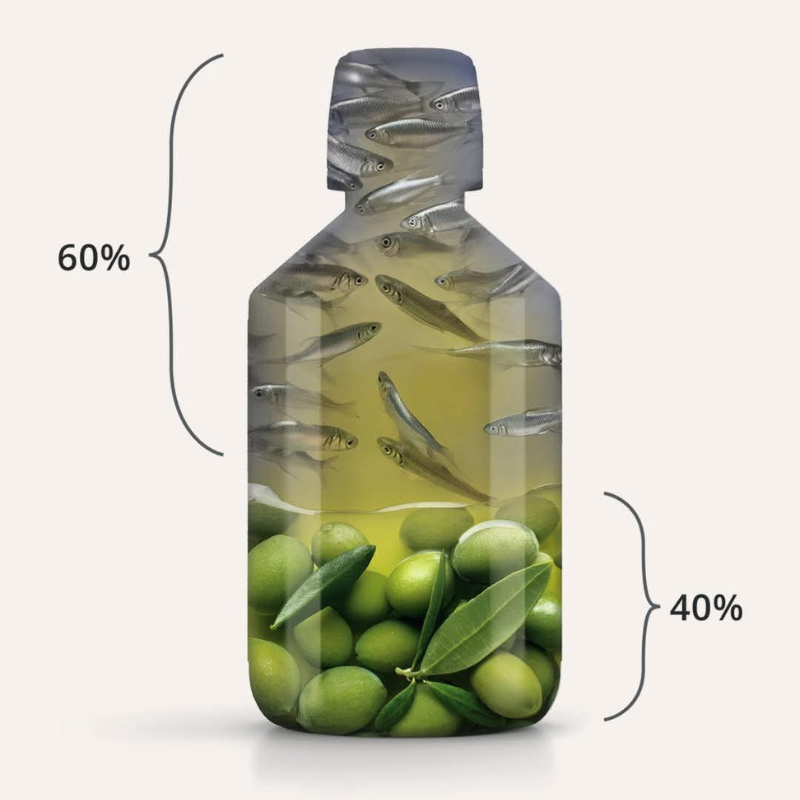
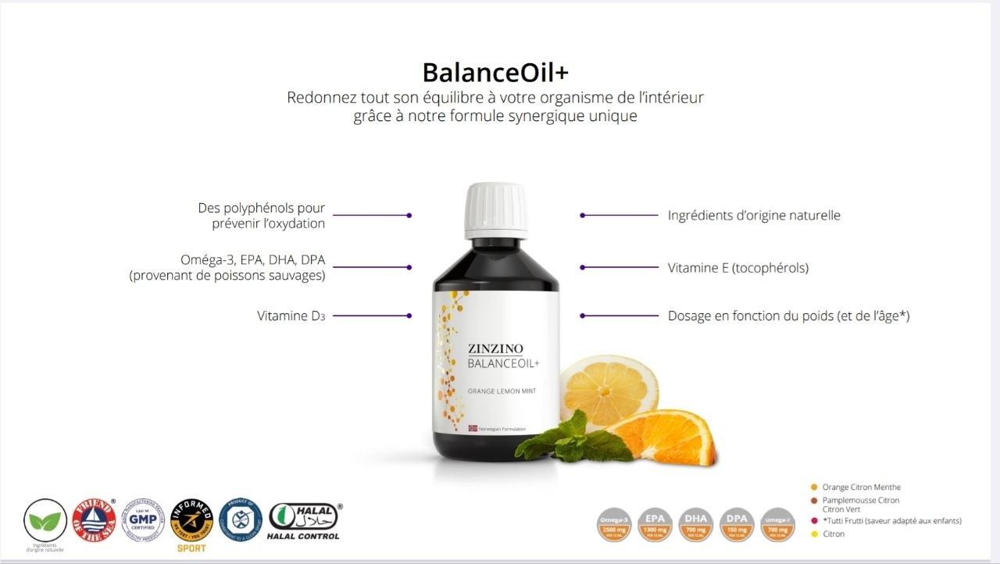
Balance Oil :
bien plus qu'une huile de poisson
Oméga-3 classiques
La dépollution du poisson supprime les polyphénols. Sans protection, les oméga-3 s'oxydent (rouillent) — ils rouillent avant d'atteindre tes cellules.
Balance Oil+ : 60 % poisson + 40 % olive
Petits poissons sauvages + huile d'olive extra-vierge de récolte précoce (Méditerranée). Ses polyphénols spécifiques protègent les oméga-3 et les acheminent intacts (non rouillés) jusqu'à tes cellules. Son efficacité se mesure : depuis mai 2024, toutes les personnes que j'ai accompagnées avec ce protocole ont amélioré leur ratio — le second test le prouve.
Un oméga-3 à spectre complet
Des teneurs optimales en EPA et DHA pour un indice oméga-3 normal, issues de poissons gras sauvages pêchés durablement.
Contient aussi de l'oméga-9 (acide oléique, issu de l'olive), des polyphénols d'olive et de la vitamine D3 (400 % des VNR).
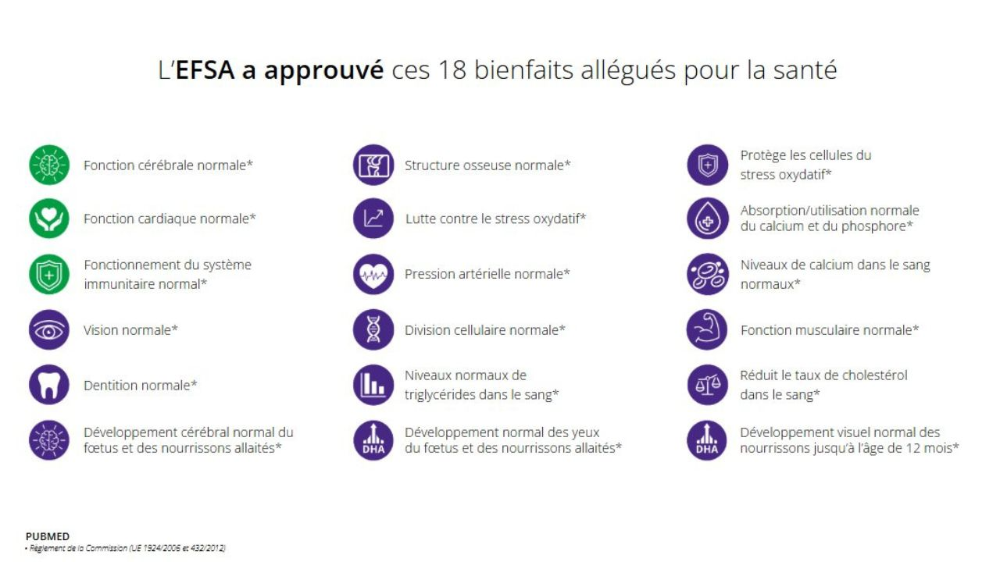
Les nutriments présents dans la formule (oméga-3, vitamine D, vitamine E…) bénéficient de plusieurs allégations de santé autorisées par l'EFSA, sous réserve des conditions d'utilisation prévues par la réglementation européenne.
Allégations de santé autorisées (UE) : le DHA contribue au maintien d'une fonction cérébrale normale ; le DHA contribue au maintien d'une vision normale ; l'EPA et le DHA contribuent à une fonction cardiaque normale ; la vitamine D contribue au fonctionnement normal du système immunitaire et au maintien d'une fonction musculaire normale ; les polyphénols de l'olive contribuent à la protection des lipides sanguins contre le stress oxydatif. Ces bienfaits s'obtiennent avec une consommation journalière conforme aux quantités indiquées par la réglementation.
Les compléments alimentaires ne remplacent pas une alimentation variée et équilibrée ni un mode de vie sain. Si tu prends des anticoagulants, demande conseil à ton médecin.
Des formules pensées par
un comité scientifique indépendant
Les produits ne sont pas de simples compléments à la mode : chaque formule est validée par des chercheurs et médecins de classe mondiale.
Dr. Paul Clayton
Pharmacologue clinicien britannique, pionnier de la pharmaco-nutrition. Il a notamment été en charge de la pharmacovigilance au Royaume-Uni et a conseillé les autorités sur les questions de nutrition et de santé publique. Son travail relie alimentation, inflammation et prévention des maladies chroniques.


« Santé publique en danger » — conférence du Dr Paul Clayton à la Sorbonne (8 mars 2025).
La porte d'entrée :
Balance Oil + ton test
Un seul geste essentiel pour démarrer : réparer tes membranes avec le Balance Oil, et mesurer ton point de départ avec le test. Tout le reste vient ensuite, selon tes besoins.
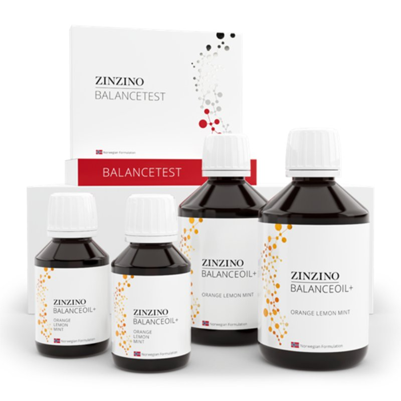
Balance Oil+ & BalanceTest
C'est ce qui règle le problème des membranes rigides : l'oméga-3 protégé par les polyphénols d'olive, plus la mesure avant/après pour ne plus jamais avancer à l'aveugle.
- Répare la fluidité des membranes cellulaires
- Mesure ton ratio oméga-6:3 réel, en chiffres
- Une preuve concrète de l'efficacité en 120 jours
- Le socle indispensable avant tout le reste
À chacun sa formule, trouve la tienne
L'efficacité de fond reste la même — à toi de choisir le format qui colle à ton quotidien.
- Citron — mon préféré !
- Orange-Citron-Menthe — le plus apprécié
- Pamplemousse-Citron vert
- Tutti Frutti — plus pour les enfants
Le concept de santé cellulaire
Pollution, stress, alimentation appauvrie, manque de sommeil… nos cellules sont sollicitées chaque jour. L'idée de la nutrition cellulaire est simple : apporter à ton organisme les éléments dont il a besoin pour fonctionner dans les meilleures conditions.
Poser d'abord la base — l'équilibre oméga — reste ma recommandation prioritaire. Mais si tes moyens te le permettent, tu peux tout à fait commencer plusieurs solutions en parallèle : les effets se cumulent, et les résultats peuvent arriver plus rapidement.
Ces solutions complètent les bases indispensables — alimentation, mouvement, sommeil, gestion du stress — sans jamais s'y substituer. Pour moi, quatre piliers sont essentiels :
Membranes souples
Préserver la fluidité des membranes grâce aux oméga-3.
Nourrir
Apporter les nutriments parfois insuffisants dans l'alimentation.
Éliminer
Soutenir les mécanismes naturels d'élimination du corps.
Hydrater
Favoriser une bonne hydratation et l'énergie cellulaire.
Les alliés que j'utilise personnellement
Voici les outils que j'utilise depuis des années et que je recommande selon les besoins et les priorités de chacun.
- Réduction de nombreux contaminants (chlore, pesticides, microplastiques, métaux lourds).
- Un meilleur goût.
- Une vraie alternative aux bouteilles plastique.
- Soutenir le confort articulaire ou musculaire au quotidien.
- Prendre soin du confort digestif.
- Intégrer davantage d'antioxydants dans sa routine.
ZinoBiotic+ — un mélange de fibres prébiotiques destiné à nourrir les bonnes bactéries de ton intestin, ton « deuxième cerveau ».
Xtend+ ou SpiruMax+ — deux solutions riches en vitamines et oligo-éléments pour compléter une alimentation parfois insuffisamment variée.
Viva+ — une formule à base de safran, souvent appréciée pendant les périodes de stress, de fatigue mentale ou lorsque le sommeil devient plus fragile.
Explore les différentes catégories
Au-delà de l'équilibre oméga, toute une gamme pensée pour la prévention et le bien-être. Clique sur une catégorie pour la découvrir dans ma boutique.
Oméga-3 & équilibre
BalanceOil+, Premium, AquaX, Vegan, Maternity, Essent+, huile d'olive R.E.V.O.O.
DécouvrirContrôle du poids
Deux gammes complémentaires : LeanShake, Energy Bar, Shake Bottle… et la gamme It Works.
Gamme contrôle du poids Gamme It WorksAutour de la maternité
Grossesse, allaitement : une période où les besoins en oméga-3 évoluent. Une page dédiée pour comprendre.
Découvrir- Santé intestinale (Gut Health) — pour explorer l'équilibre de ton microbiote.
- Vitamine D — pour mesurer ton taux et ajuster si besoin.
- HbA1c — pour connaître ta glycémie moyenne sur les derniers mois.
Pourquoi j'ai choisi
de mesurer plutôt que deviner
Pendant six ans, j'ai pris des oméga-3 classiques, persuadée de faire ce qu'il fallait pour ma santé. Puis, il y a deux ans, j'ai décidé d'arrêter de deviner et de mesurer. Le résultat de mon premier test a été un véritable électrochoc.
Manger sainement est précieux.
Mais mesurer permet de savoir où l'on en est réellement.
déséquilibre important
retour progressif
équilibre durable
Au-delà des chiffres, chacun vit son propre parcours. Le corps mobilise ses ressources là où il en a le plus besoin, à son propre rythme.
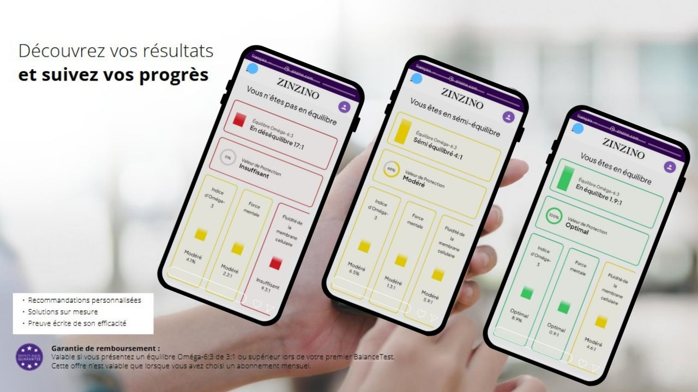
Mes trois tests, dans l'ordre. Je n'ai rien à cacher : voilà d'où je suis partie, et où j'en suis.
Pourquoi cette démarche m'a convaincue
Avec mon regard d'ancienne infirmière, trois critères étaient indispensables pour me lancer.
Mon parcours, et les leurs
Ce chemin, je ne l'ai pas parcouru seule. Depuis, j'ai accompagné de nombreuses personnes — et voici quelques-unes de leurs expériences.
Les témoignages qui suivent reflètent des expériences personnelles. Chaque personne est différente et les ressentis peuvent varier. Ce qui rend cette démarche particulière, c'est qu'elle s'appuie non seulement sur des impressions, mais aussi sur des mesures biologiques objectives.
« Mon premier BalanceTest a montré un ratio oméga-6:3 de 58:1, ce qui m'a surprise. Après un an d'utilisation de BalanceOil+, mon test de suivi a montré un ratio de 5:1. Je suis impatiente de découvrir les résultats de mon prochain test. »
« Je prends BalanceOil+ et ZinoBiotic+ tous les jours. Au départ, j'étais sceptique, car j'avais déjà essayé d'autres produits. Aujourd'hui, je me sens plus motivée dans mes activités quotidiennes et j'apprécie qu'ils s'intègrent à mon mode de vie sportif. »
« Cela fait un an que j'ai décidé d'investir dans ma santé et je suis satisfaite de cette démarche. Les acides gras oméga-3 EPA et DHA contenus dans BalanceOil+ contribuent au maintien d'une fonction cardiaque et cérébrale normale. »

Le témoignage d'André, mon tout premier client — dès que nous avons eu accès au test en France, il y a deux ans. Aujourd'hui âgé de 70 ans.
Au-delà des chiffres, chaque parcours est unique.
C'est toujours le corps qui décide où il a le plus besoin de retrouver son équilibre.
Comment devenir client
Tu as pris le temps de comprendre ce qui se joue dans tes cellules. La suite dépend entièrement de toi — certaines personnes veulent simplement vérifier leur équilibre, d'autres mettre en place une routine complète. Mon rôle n'est pas de te convaincre, mais de t'aider à choisir ce qui correspond à tes besoins et à ton budget.
Livraison tous les 2 mois (une organisation pensée pour limiter les transports). À partir du 7ᵉ mois, ta fidélité est récompensée : +10 % de la valeur de tes commandes en produits offerts.
Même logique pour l'huile : au prix public (achat unique), un flacon est à 61 € ; avec l'abonnement, il passe à 43 €. C'est tout l'intérêt de démarrer directement avec un kit et l'abonnement.
- Des prix réduits sur toute la gamme (jusqu'à 60 % de moins que les prix publics).
- Les frais de port remboursés en produits gratuits (via le programme fidélité).
- +10 % de chaque commande en produits gratuits, dès le 7ᵉ mois d'abonnement.
- Les autres produits au tarif abonné, même achetés à l'unité (en plus de ton abonnement).
- Le programme de recommandation : en partageant autour de toi, tes produits peuvent devenir partiellement, voire totalement autofinancés.
- Non remboursable
- Aucun produit
- Pas de second test
- S'il révèle un déséquilibre : tout reste à faire
- Remboursé si tu es déjà en équilibre
- 2 mois et plus d'huile (selon ton poids)
- Second test offert à 4 mois*
- Tu agis dès le premier jour
26 € de plus — et c'est pourtant la seule option qui ne te fait courir aucun risque, puisque c'est la seule qui soit remboursable.
Il y a aussi une raison de fond : un test qui n'est suivi d'aucun changement ne sert à rien. Tu saurais où tu en es… et après ? Ce qui fait la différence, ce n'est pas le chiffre — c'est la petite habitude qu'on met en place ensuite, et le fait de ne pas être seul·e pour la tenir.
Cela dit, si tu préfères vraiment le test seul, c'est ton choix et je te l'organise volontiers. Écris-moi.
* Le second test est envoyé après le kit premier suivi de 4 mensualités.
au détail
abonné
Je te réponds avec le lien de commande adapté — et je m'assure que tu sois bien rattaché(e) à la personne qui t'a invité(e).
au détail
abonné
Je te réponds avec le lien de commande adapté — et je m'assure que tu sois bien rattaché(e) à la personne qui t'a invité(e).
au détail
abonné
Je te réponds avec le lien de commande adapté — et je m'assure que tu sois bien rattaché(e) à la personne qui t'a invité(e).
au détail
abonné
Je te réponds avec le lien de commande adapté — et je m'assure que tu sois bien rattaché(e) à la personne qui t'a invité(e).
Tu connais sûrement des proches intéressés par la prévention et le bien-être. En leur recommandant notre concept, tu peux bénéficier de produits offerts tous les mois.
Chaque client recommandé peut t'offrir
des produits gratuits chaque mois
Toi
Tes résultats parlent. Tu en parles naturellement à un proche.
Un proche
Il fait son test et son premier achat grâce à toi.
Tu reçois
Un ou plusieurs produits offerts chaque mois, sans frais.*
Ce qu'on me demande le plus souvent
Si ta question n'est pas là, écris-moi : je réponds personnellement.
Une question ? Écris-moi directement sur WhatsApp, je réponds personnellement — clique sur le bouton vert en bas de ton écran.
Il s'agit d'une démarche d'hygiène de vie et de prévention, qui vient en complément de ton suivi habituel, jamais à sa place.
Deux précautions concrètes : si tu prends des anticoagulants, demande l'avis de ton médecin avant de commencer. Et en cas de doute, de pathologie ou de grossesse, la bonne personne à consulter reste ton professionnel de santé.
Dans le kit « L'Indispensable » (215 €), il est accompagné de 2 mois et plus d'huile, d'un second test offert à 4 mois — et surtout le kit t'est remboursé si ton premier test montre que tu es déjà en équilibre.
Autrement dit : 26 € de plus, et c'est la seule option qui ne te fait courir aucun risque. Le détail est dans l'accordéon « Je veux juste faire le test » plus haut.
Le protocole complet — l'huile et les deux tests — revient à moins de 2 € par jour. C'est un café au comptoir.
Mais je crois que la vraie question n'est pas « combien ça coûte ». C'est « est-ce que je dépense bien ? »
Ce qui coûte vraiment cher, c'est d'acheter au hasard. J'y suis passée : six ans d'oméga-3 de bonne qualité, en étant persuadée de bien faire… et un premier test à 17:1. Six ans à payer pour quelque chose qui n'arrivait pas jusqu'à mes cellules. Ça, c'est de l'argent par la fenêtre. Mesurer, c'est justement arrêter de gaspiller.
Ce qui n'est pas dans le prix : mon temps, mon accompagnement, et les ressources de toute une équipe derrière moi. Tu ne paies que les produits — le reste t'est offert, que tu commandes ou non.
Et si c'est vraiment un souci financier : écris-moi. Sans gêne, c'est important. On regarde ensemble ce qui est possible : commencer plus petit, avancer autrement, ou utiliser le programme de recommandation pour autofinancer tes produits. J'ai des pistes concrètes — et je préfère mille fois qu'on en parle plutôt que de te voir renoncer en silence.
Enfin, une chose qu'on oublie souvent : on regarde le prix, rarement ce qu'on y gagne. Les personnes que j'accompagne me parlent d'énergie retrouvée, de sommeil, de sérénité — et ça finit toujours par déborder sur le reste : le travail, les projets, l'humeur du quotidien.
Et si ce n'est pas le moment, c'est très bien aussi. Tu auras appris quelque chose d'utile en passant par ici, et je serai là si un jour tu changes d'avis.
Ensuite, compte 4 mois minimum : c'est le temps dont tes cellules ont besoin pour se renouveler. C'est pour cela que le second test est envoyé à ce moment-là — avant, il ne montrerait pas grand-chose.
Je ne te promets pas d'équilibre en 120 jours : tout dépend de ton point de départ. Quelqu'un qui part de 30:1 n'a pas le même chemin que quelqu'un qui part de 6:1.
J'accompagne des personnes de tous profils : des actifs débordés, des retraités, des jeunes, des soignants, des personnes qui ne font aucun sport. Ma fille a fait le test à 20 ans, mon premier client l'a fait à près de 70.
Le déséquilibre oméga ne fait pas de tri : il concerne aussi bien le sportif assidu que la personne sédentaire. C'est bien pour ça qu'on mesure plutôt que de deviner.
Une petite habitude quotidienne, c'est tout. Le reste, tu l'ajustes à ton rythme, si tu en as envie — et l'ebook nutritionnel offert avec ton test te donne des pistes concrètes.
Le second test te montrera d'ailleurs l'effet réel de ton hygiène de vie : par exemple, une consommation importante de sucre peut freiner l'amélioration de ta fluidité membranaire. Tu le vois, tu comprends, tu ajustes. Sans culpabilité.
Mais je préfère être franche : je suis partenaire indépendante de la marque dont je parle ici, et si tu commandes via mes liens, cela contribue à mon activité. Tu le sais, c'est plus sain ainsi.
Une chose à savoir, en revanche : tu n'achètes rien à moi — ta commande se fait directement auprès de la société, sur son site, avec son service client et ses garanties. Et de mon côté, mon accompagnement et le temps que je te consacre te sont offerts, que tu commandes ou non.
Ce que je ne ferai pas, c'est te vendre quelque chose dont tu n'as pas besoin. C'est bien pour ça que je commence par te proposer de mesurer : si ton test montre que tu es déjà en équilibre, je te le dirai, et tu continueras simplement ce que tu fais déjà.
Le corps n'envoie pas de signal clair pour ce genre de déséquilibre. On peut manger sainement, faire du sport, prendre des compléments… et être malgré tout déséquilibré·e. J'ai vu des sportifs, des naturopathes, des personnes très attentives à leur santé découvrir des résultats auxquels elles ne s'attendaient pas.
Mesurer, c'est arrêter de payer pour quelque chose dont on ignore l'effet. Et c'est aussi la seule façon de vérifier que ce que tu mets en place fonctionne vraiment — noir sur blanc, avant et après.
Oui, prendre soin de sa santé cellulaire représente un budget. Mais c'est avant tout un investissement — pour ton bien-être, et pour longtemps. Et grâce au programme de recommandation, tes produits peuvent devenir partiellement, voire totalement autofinancés.
Ce n'est pas une question de miracle.
C'est une question de constance —
maintenir la santé cellulaire à son niveau optimal.
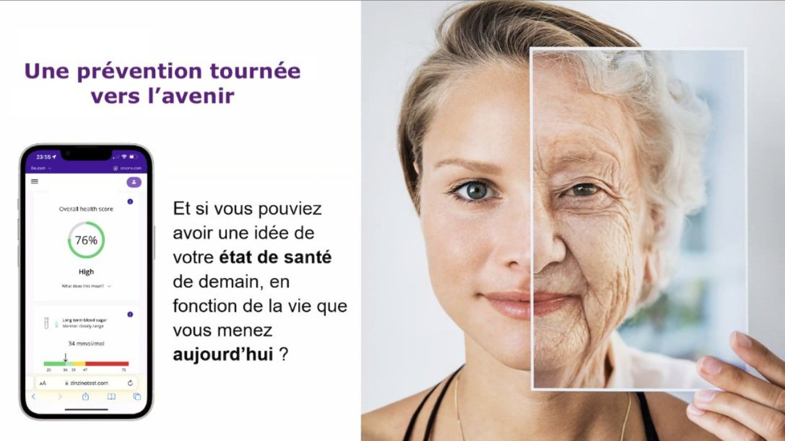
Agir aujourd'hui,
c'est déjà prendre soin de demain.
Chaque jour compte pour tes cellules. Mesurer ton profil, puis mettre en place une petite habitude, c'est déjà agir concrètement sur ce qui dépend de toi.
Prendre rendez-vous avec moiVeux-tu savoir
où tu en es personnellement ?
Savoir si ce que tu fais déjà a un impact positif sur ta biologie. Avoir une preuve chiffrée — pas une promesse.
Tu connais sûrement des proches intéressés par la prévention et le bien-être — qui aimeraient, eux aussi, savoir où ils en sont vraiment. Le programme de recommandation permet, sous certaines conditions, d'obtenir gratuitement ses produits du quotidien. Il ne s'agit pas de vendre, mais simplement de recommander ce qui t'a personnellement aidé.
Choisir un complément,
c'est aussi choisir l'entreprise
Voici quelques repères factuels pour mieux comprendre l'écosystème derrière cette démarche.
Hilde & Örjan Saele
Un couple norvégien qui a fondé l'entreprise en Scandinavie, avec une conviction simple : rendre la prévention santé accessible, mesurable et humaine.
Une entreprise établie
Fondée en Scandinavie il y a plus de vingt ans — spécialisée dans la nutrition personnalisée et la prévention.
La mesure au cœur
Développe une approche fondée sur les autotests sanguins et le suivi dans le temps — pionnière de la prévention par la mesure.
Cotée en bourse
Cotée au Nasdaq First North (Stockholm) depuis 2014. Obligations de transparence et publication régulière des résultats.
Clients en abonnement
En 2025, le cap du million de clients abonnés à travers le monde est franchi.
Pays
Une présence internationale dans une centaine de pays, et un développement qui se poursuit.
This is Zinzino — site officiel 🎯 Vision, mission & valeurs
Ce qui guide l'entreprise
Données publiques issues des rapports financiers de l'entreprise (cotation Nasdaq First North). Les chiffres de croissance et de présence internationale évoluent dans le temps.
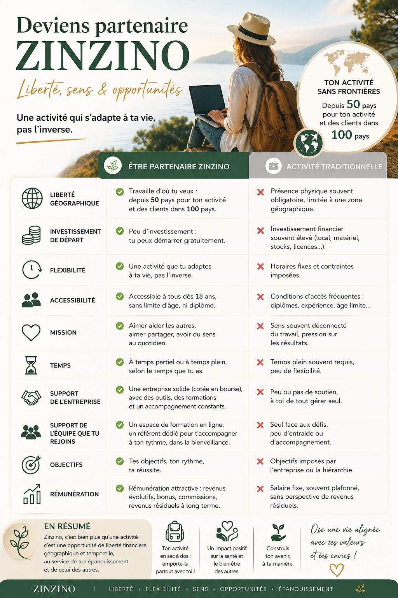
Si certains sujets t'ont parlé…
Que tu aies été invité·e par un proche, que tu souhaites réaliser un test ou simplement poser une question, je serai heureuse d'échanger avec toi — sans engagement et à ton rythme.
Par WhatsApp ou SMS — comme tu préfères.
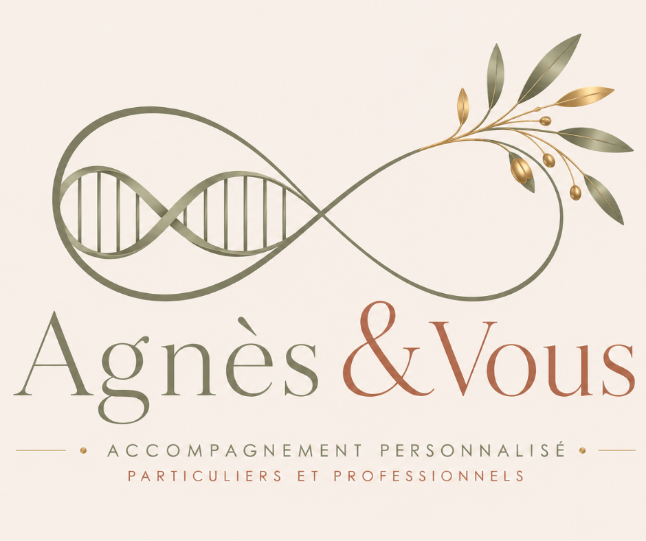
Merci d'avoir pris le temps
Prendre soin de soi commence souvent par une simple question et quelques minutes de curiosité.

Repars avec quelque chose d'utile
C'est mon cadeau pour te remercier de ta visite. Choisis ce qui te correspond le mieux.
Tes coordonnées restent strictement confidentielles. Tu peux quitter la communauté à tout moment d'un simple clic.